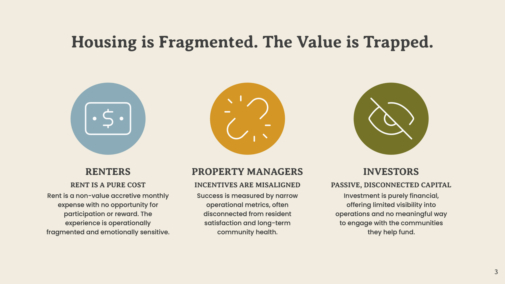
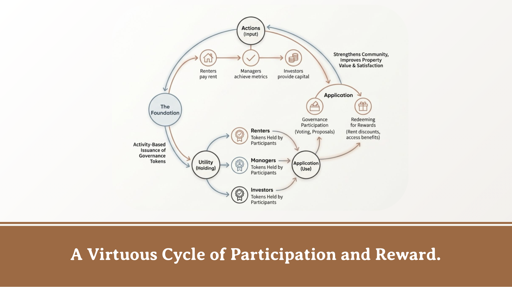
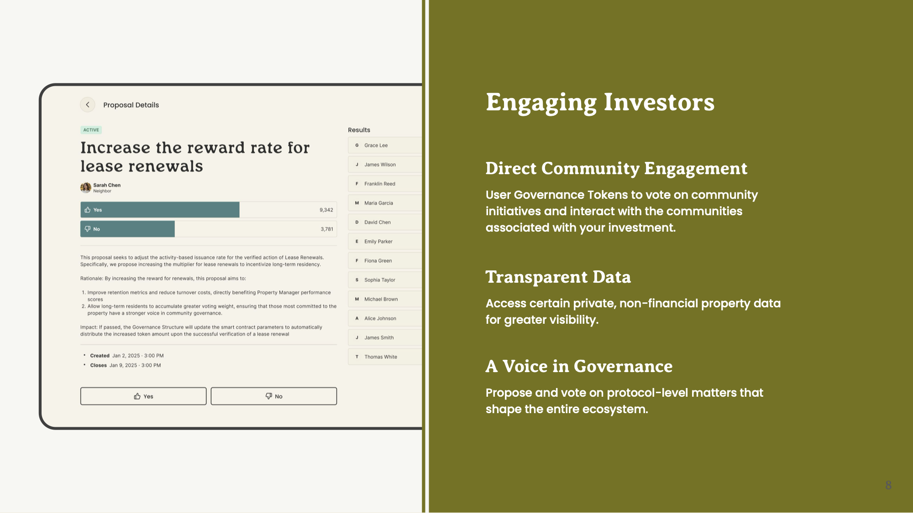
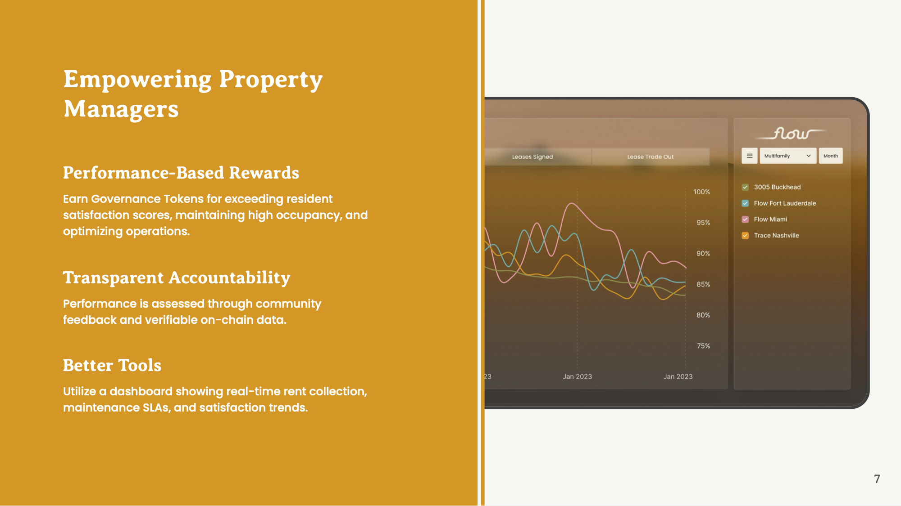
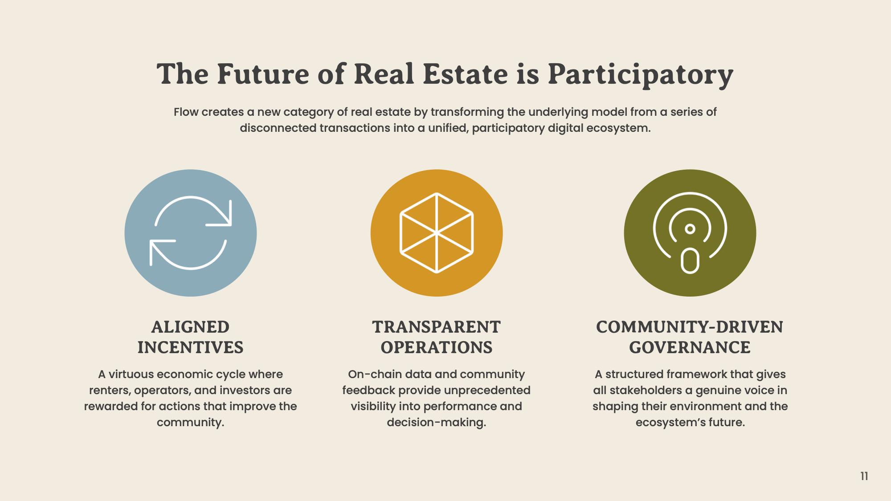

Product Design · iOS, Android · 2026
Making crypto invisible
for Flow
Overview
Rent, reimagined as a participatory system
Flow is a vertically integrated real estate ecosystem that merges housing, blockchain payments, and community governance into a single platform. At its core: a stablecoin called Drops that powers rent payments, a wallet that holds it, and a governance token that rewards participation.
The central design challenge wasn't the technology — it was the perception of the technology. Blockchain, wallets, and stablecoins carry associations that breed hesitation. My job was to design a product where renters, operators, and investors could each interact confidently without ever needing to think about what was powering it underneath.
A successful design meant a tenant wouldn't realize they used crypto. Rent should feel safer, not riskier. Payments should feel instant and calm.

Approach
Three participants, three mental models
Flow serves three distinct user types, each with fundamentally different relationships to the product. Rather than designing a single unified UI and adapting it, I started by defining a separate mental model for each — then designed interfaces to match those models precisely.
01
Tenant
"I pay rent. I live here. I get benefits for being a good neighbor." The wallet is invisible, the balance is in dollars, and participation is a natural extension of being a resident.
02
Property Operator
"I manage buildings and care about cash flow, speed, and accountability." Operators need clarity on what's collected and how fast it settled — without needing to understand the rails beneath.
03
Investor
"I want visibility and a voice, not day‑to‑day operations." Governance should feel lightweight — clear proposals, one-tap votes, legible outcomes without financial or political framing.

Investors
Engaging investors through community, not complexity
Investors in Flow aren't passive capital — they're participants. The governance experience needed to give LP investors meaningful access to community data and decision-making without pulling them into operational complexity. Proposals, voting history, and community outcomes are surfaced clearly, with no financial speculation framing in sight.
The design challenge was making governance feel meaningful without making it feel like work. Voting on a community initiative should feel as natural as approving a document — not like navigating a DAO dashboard.

Operators
Giving property managers better tools
Property managers are accountable to residents, investors, and operational metrics simultaneously. The operator dashboard was designed to give them a single view of everything that matters: rent collected, settlement status, open maintenance requests, and resident satisfaction trends.
Critically, the blockchain settlement layer needed to surface its advantages — same-day settlement, instant reconciliation — without requiring operators to understand how it worked. A payment that "settled instantly" needed to feel like a product feature, not a technical footnote.

Renters
Dollar-first, complexity last
The renter experience required the strictest hierarchy of abstraction. Blockchain infrastructure, private keys, token standards, and network names are completely invisible. What renters see is a "Flow Balance" — not a wallet. Payments confirm with a dollar amount and a green checkmark — not a transaction hash.
Language was treated as a design surface throughout. "Your Flow Balance" instead of "Wallet." Drops framed as a speed benefit ("settles instantly") rather than a technical feature. Governance tokens described as "rewards" earned through participation. Progressive disclosure let curious users learn more — but never forced it on anyone.

Outcome
A new category of real estate participation
Flow transforms housing from a series of disconnected transactions into a unified participatory ecosystem. Renters earn real value from doing what they already do. Operators gain performance-based rewards and transparent accountability. Investors get a genuine voice in the communities they help fund.
The measure of success was simple: does this feel like rent, or does it feel like crypto? Every design decision pointed toward the former — and the unified product reflects that.
